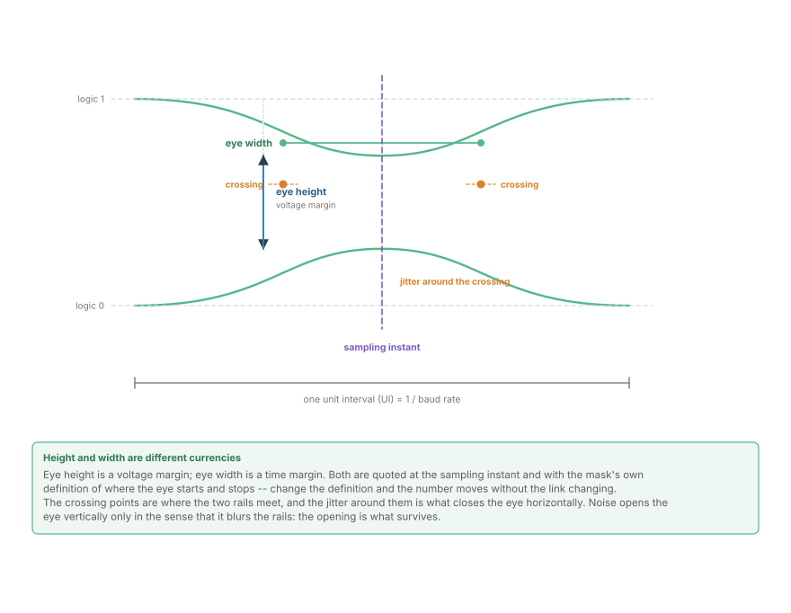
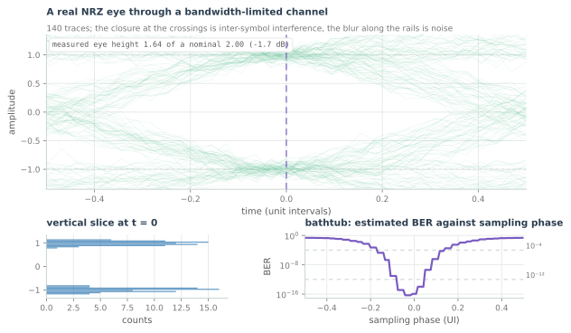
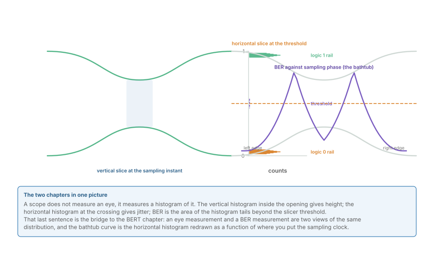
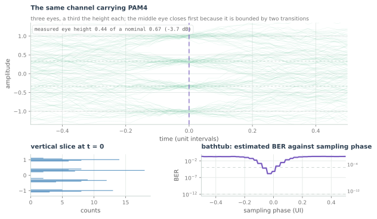
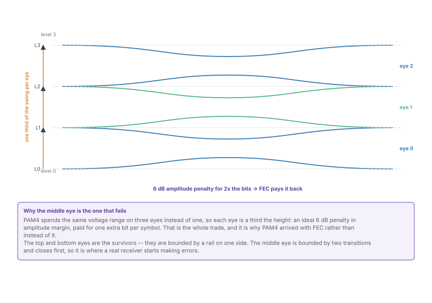

Reading an Eye Diagram
How a persistence trace is built, what eye height and eye width actually measure, why NRZ has one eye and PAM4 has three, and how to read a mask test without memorising it.
A bit error ratio is the number that matters, and it is also the number you cannot see. At 10⁻¹² you would wait hours for a single error, and at the error ratios a modern link actually targets you would wait longer than the product's lifetime. So the industry measures something else: it measures the picture of the signal, and infers the error ratio from it. That picture is the eye diagram, and reading one is the single most useful bench skill in this field.
This chapter is about reading, not deriving. The derivation -- why zero inter-symbol interference at the sampling instants is the condition for an open eye -- belongs to Convolution, and Why Every DSP Block Is One and to the pulse-shaping chapter later in the course. Here the question is what a scope puts on the screen and what each feature of it means.
How a persistence trace is built
An eye diagram is not a measurement of one waveform. It is an overlay, and the overlay is the measurement.
The instrument takes a long acquisition, finds the bit clock, and then cuts the record into slices exactly one unit interval long. Every slice is drawn on top of every other slice, all referenced to the recovered clock. Where many slices agree, the trace is dark and solid; where they disagree, it is faint and smeared. What remains after enough slices is called persistence, and it is a picture of the distribution of the waveform rather than one instance of it.
Two consequences follow immediately:
- One capture cannot produce an eye. You need thousands of unit intervals for the density to mean anything. A figure that looks solid after 20 slices is hiding its own noise.
- The clock matters more than the amplitude. If the recovered clock jitters, every slice is drawn at a slightly wrong position and the whole eye smears horizontally. Jitter and noise look different: noise smears vertically, timing error smears horizontally.
The anatomy, with names

Each label in that figure is a number on a compliance report, so it is worth being precise about what each one measures.
- Eye height is the vertical opening at the sampling instant, usually quoted at the 1% and 99% points of the rail distributions rather than at their extremes. It is a voltage margin: how far the signal can be perturbed before it crosses the decision threshold.
- Eye width is the horizontal opening, the span of sampling phases over which the decision would still be correct. It is a time margin, and it is what timing recovery has to work inside.
- The crossings are where the two rails meet, at the middle of the unit interval for a clean two-level signal. Real crossings are not points; they are clouds, because different bit sequences arrive at the threshold at slightly different times.
- Jitter is the width of that cloud. It is measured in picoseconds or in fractions of a unit interval, and it is the horizontal analogue of noise.
- The mask is the keep-out region drawn over the eye. If any part of the trace enters it, the port fails, regardless of how the eye looks to your eye.
The last point is the one engineers underestimate. A mask is not a guide to good practice; it is a pass/fail boundary, and it is drawn by people who measured a great many failing links. A trace that grazes a mask corner is a product that will fail in the field at a temperature the lab did not reach.
The same picture, with real impairments
Ideals are for labelling. Here is what the instrument actually shows.

The figure is computed from a raised-cosine pulse through a bandwidth-limited channel, which makes the closure honest: the measured eye height printed in the corner is measured on the same array that is plotted, not asserted. Three features are worth finding in it:
- The opening is narrower than nominal. The pulse shape is right, but the channel has taken away the high-frequency content that makes the edges fast, so neighbouring symbols leak into each other at the sampling instant. That leakage is inter-symbol interference.
- The rails are bands, not lines. The thickness is random noise, added by the receiver and the channel. It is approximately Gaussian, which is why the vertical histogram at the bottom left has that shape.
- The crossings are clouds. Some traces arrive early and some late, and the spread is deterministic pattern-dependent jitter -- the same ISI, viewed in time instead of amplitude.
The lower-left panel is the vertical histogram through the sampling instant, and it is the eye's DNA: two rail distributions separated by the eye opening. The lower-right panel is the horizontal view -- the error ratio you would get for each choice of sampling phase. It is called a bathtub curve because of its shape, and it is the bridge to the next chapter, because it is a bit error ratio plotted against a design choice.
The bathtub is the eye, rotated
Nothing new is measured between the eye and the bathtub. They are the same data, sliced two different ways.
- Slice vertically at the sampling instant: you get a distribution of amplitudes, and the gap between the rails is the eye height.
- Slice horizontally at the decision threshold: you get a distribution of crossing times, and the empty middle is the eye width.
- Sweep the sampling phase across the unit interval and count how often the decision at that phase would be wrong: you get the bathtub.

The bathtub's two walls are the eye edges, and its floor in the middle is the best error ratio the link can achieve. Its shape is why a receiver's timing recovery loop is designed to sit at the bottom of the tub and why it matters when the loop drifts: at 10⁻¹² on the floor, a small phase error moves you up one wall very quickly.
NRZ has one eye; PAM4 has three
Everything above assumed two levels. At four levels the picture changes in a way that is easy to state and hard to overstate.

- Three eyes, stacked. Each adjacent pair of levels defines one eye, so four levels give three openings.
- Each is a third of the height. At equal peak-to-peak swing, PAM4's eye spacing is one third of NRZ's, which is 20·log₁₀(1/3) = -9.5 dB of amplitude margin for the same channel and the same noise.
- They do not fail equally. The top and bottom eyes are bounded by a rail on one side and a transition on the other. The middle eye is bounded by transitions on both, so it collects ISI from two directions and closes first.
That middle eye is the reason PAM4 arrived with forward error correction rather than instead of it. The 9.5 dB of amplitude margin has to come from somewhere, and the answer is: from a code that repairs errors, purchased at the cost of redundancy bits and latency.

The figure states the trade in one line: 6 dB in amplitude for twice the bits, and the two numbers are not independent. You pay the margin to buy the rate, and you buy the margin back with FEC.
Where this connects
- Eye height and width are the vertical and horizontal margins; the mask is the pass/fail boundary drawn around them.
- ISI eats the opening from both ends, so eye height is a total opening and not a noise margin.
- The bathtub is the eye sliced horizontally and swept across sampling phase; it is an error ratio, which makes it the natural bridge to the BERT chapter.
- PAM4's third-height eyes are why every modern Ethernet link above 50 G per lane has FEC.
- A closed eye at the slicer is a bit error ratio somewhere upstream of the code, and predicting that ratio from the eye is the next chapter's job.
In the optical link
The same picture, different axis labels. A coherent receiver's constellation is the optical analogue of an eye diagram: the vertical histogram becomes a two-dimensional cloud around each constellation point, and eye height becomes the minimum Euclidean distance between points. Reading a constellation for closure is exactly reading an eye for closure -- the impairment is just described in phase as well as amplitude.
PAM4's penalty is optical PAM4's penalty too. 400G per wavelength over short reach is frequently PAM4 at 53 or 106 GBd, with the same 9.5 dB amplitude penalty against NRZ and the same dependence on FEC. The industry's answer is also the same: a stronger code, and a receiver designed to keep the middle eye open as long as possible.
Jitter is where the two worlds differ most. A copper link's jitter is dominated by ISI and by the transmitter's own clock; an optical link adds laser phase noise, which carrier phase estimation has to remove before the constellation closes in phase rather than amplitude. The eye-diagram habit -- slice it both ways, and ask what the picture is hiding -- transfers unchanged.
And the mask is the same kind of instrument. A coherent optical receiver is specified with a back-to-back OSNR penalty at a target pre-FEC error ratio, which is a mask in the signal-to-noise domain rather than the time domain. It is the same reasoning: name the impairment, draw the boundary, and measure how close the hardware comes to it.